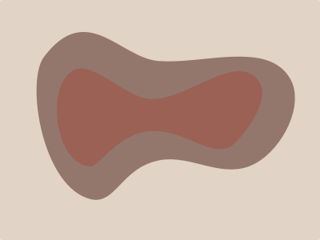
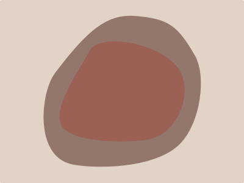
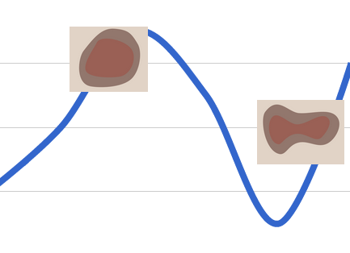

Stephanie Clay
- Patient ID #4A7FE, Room 213 A
- Admitted - Monday March 4, 2013
Assess Risk
-

Ulcer 1 - Left Knee
Start Date - Wednesday March 6, 2013
Last Assessment - 2 Hours agoAssessHistory -

Ulcer 2 - Upper Right Thigh
Start Date - Thursday March 7, 2013
Last Assessment - 6 Hours agoAssessHistory -
Ulcer 3 - Lower Back
Start Date - Thursday March 7, 2013
Last Assessment - 4 Hours agoAssessHistory
- Braden Risk Test
Not Yet AdministeredAssess Risk
- Braden Q Test
Children OnlyAssess Risk
-
Complete Braden Risk Assessment
Today
-
Educate Patient about Ulcers
Tomorrow
-
Contact Wound Care Team
Today
-
Re-Assess Ulcers
Today
-
New Note
-
Ulcer 2
Ulcer 3Thursday March 7, 2013 at 2pmThe floor nurse noted two new pressure wounds forming on the patient's upper right thigh and lower back.
-
Wednesday March 6, 2013 at 4pmUlcer 1
The wound care team assessed a new wound on the patient's left knee. Recommendation is to rotate the patient every two hours.
-
Monday March 4, 2013 at 11amRisk
The patient was admitted and determined to be at a high risk for pressure ulcers through a Braden Risk Assessment.
- Photo1 of 6
- LocationTap to mark a location.2 of 6
- Dimensions3 of 6
-
Length
cm -
Width
cm -
Depth
cm
-
Length
- MoistureDegree to which skin is exposed to moisture4 of 6
-
1. Constantly Moist
Skin is kept moist almost constantly by perspiration, urine, etc. Dampness detected every time patient is moved or turned. -
2. Very Moist
Skin is often, but not always moist. Linen must be changed at least once a shift. -
3. Occasionally Moist
Skin is occasionally moist, requiring an extra linen change approximately once a day. -
4. Rarely Moist
Skin is usually dry, linen only requires changing at routine intervals.
-
1. Constantly Moist
- Stage5 of 6
-
Stage 1
Nonblanchable erythema of intact skin, the heralding lesion of skin ulceration. In individuals with darker skin, discoloration of the skin, warmth, edema, induration, or hardness may also be indicators. -
Stage 2
Partial thickness skin loss involving epidermis, dermis, or both. The ulcer is superficial and presents clinically as an abrasion, blister, or shallow crater. -
Stage 3
Full thickness skin loss involving damage to or necrosis of subcutaneous tissue that may extend down to, but not through, underlying fascia. The ulcer presents clinically as a deep crater with or without undermining of adjacent tissue. -
Stage 4
Full thickness skin loss with extensive destruction, tissue necrosis, or damage to muscle, bone, or supporting structures (e.g., tendon, joint capsule). Undermining and sinus tracts also may be associated with Stage 4 pressure ulcers.
-
Stage 1
- Final NotesAdd any comments here.5 of 6
- MoistureDegree to which skin is exposed to moisture1 of 5
-
1. Constantly Moist
Skin is kept moist almost constantly by perspiration, urine, etc. Dampness detected every time patient is moved or turned. -
2. Very Moist
Skin is often, but not always moist. Linen must be changed at least once a shift. -
3. Occasionally Moist
Skin is occasionally moist, requiring an extra linen change approximately once a day. -
4. Rarely Moist
Skin is usually dry, linen only requires changing at routine intervals.
Add Notes
Post -
1. Constantly Moist
- Stage2 of 5
-
Stage 1
Nonblanchable erythema of intact skin, the heralding lesion of skin ulceration. In individuals with darker skin, discoloration of the skin, warmth, edema, induration, or hardness may also be indicators. -
Stage 2
Partial thickness skin loss involving epidermis, dermis, or both. The ulcer is superficial and presents clinically as an abrasion, blister, or shallow crater. -
Stage 3
Full thickness skin loss involving damage to or necrosis of subcutaneous tissue that may extend down to, but not through, underlying fascia. The ulcer presents clinically as a deep crater with or without undermining of adjacent tissue. -
Stage 4
Full thickness skin loss with extensive destruction, tissue necrosis, or damage to muscle, bone, or supporting structures (e.g., tendon, joint capsule). Undermining and sinus tracts also may be associated with Stage 4 pressure ulcers.
Add Notes
Post -
Stage 1
- DimensionsUse a ruler to measure the dimensions of the Ulcer.3 of 5
-
Length (cm)
-
Width(cm)
-
Depth(cm)
Add Notes
Post -
Length (cm)
- Photo4 of 5
Take a photo
Add Notes
Post - Final NotesAdd any comments here.5 of 5

This is where you can make tests and stuff.
- Sensory PerceptionAbility to respond meaningfully to pressure-related discomfort.1 of 6
-
1. Completely Limited
Unresponsive (does not moan, flinch, or grasp) to painful stimuli, due to diminished level of consciousness or sedation OR limited ability to feel pain over most of body -
2. Very Limited
Responds only to painful stimuli. Cannot communicate discomfort except by moaning or restlessness OR has a sensory impairment which limits the ability to feel pain or discomfort over ½ of the body -
3. Slightly Limited
Responds to verbal commands, but cannot always communicate discomfort or the need to be turned OR has some sensory impairment which limits ability to feel pain or discomfort in 1 or 2 externalities -
4. No Impairment
Responds to verbal commands. Has no sensory deficit which would limit ability to feel or voice pain or discomfort.
Add Notes
Post -
1. Completely Limited
- MoistureDegree to which skin is exposed to moisture2 of 6
-
1. Constantly Moist
Skin is kept moist almost constantly by perspiration, urine, etc. Dampness detected every time patient is moved or turned. -
2. Very Moist
Skin is often, but not always moist. Linen must be changed at least once a shift. -
3. Occasionally Moist
Skin is occasionally moist, requiring an extra linen change approximately once a day. -
4. Rarely Moist
Skin is usually dry, linen only requires changing at routine intervals.
Add Notes
Post -
1. Constantly Moist
- ActivityDegree of physical activity3 of 6
-
1. Bedfast
Confined to bed. -
2. Chairfast
Ability to walk severely limited or non-existent. Cannot bear own weight and/or must be assisted into chair or wheelchair. -
3. Walks Occasionally
Walks occasionally during day, but for very short distances, with or without assistance. Spends majority of each shift in bed or chair. -
4. Walks Frequently
Walks outside room at least twice a day and inside room at least once every two hours during walking hours.
Add Notes
Post -
1. Bedfast
- MobilityAbility to change and control body position4 of 6
-
1. Completely Immobile
Does not make even slight changes in body or extremity position without assistance. -
2. Very Limited
Makes occasional slight changes in body or extremity position but unable to make frequent or significant changes independently. -
3. Slightly Limited
Makes frequent though slight changes in body or extremity position independently. -
4. No Limitation
Makes major and frequent changes in position.
Add Notes
Post -
1. Completely Immobile
- NutritionUsual food intake pattern5 of 6
-
1. Very Poor
Never eats a complete meal. Rarely eats more than ⅓ of any food offered. Eats 2 servings or less or protein (meat or dairy products) per day. Takes fluids poorly. Does not take a liquid dietary supplement OR is NPO and/or maintained on clear liquids or IV's for more than 5 days. -
2. Probably Inadequate
Rarely eats a complete meal and generally eats only about ½ of any food offered. Protein intake includes only 3 servings of meat or dairy products per day. Occasionally will take a dietary supplement OR receives less than optimum amount of liquid or tube feeding. -
3. Adequate
Eats over half of most meals. Eats a total of 4 servings of protein (meet or dairy products) per day. Occasionally will refuse a meal, but will usually take a supplement when offered OR is on a tube feeding or TPN regimen which probably meets most of nutritional needs. -
4. Excellent
Eats most of every meal. Never refuses a meal. Usually eats a total of 4 or more servings of meat and dairy products. Occasionally eats between meals. Does not require supplementation.
Add Notes
Post -
1. Very Poor
- Friction & Shear6 of 6
-
1. Problem
Requires moderate to maximum assistance in moving. Complete lifting without sliding against sheets is impossible. Frequently slides down in bed or chair, requiring frequent repositioning with maximum assistance. Spasticity, contractures or agitation leads to almost constant friction. -
2. Potential Problem
Moves feebly or requires minimum assistance. During a move skin pobably slides to some extent against sheets, chair, restraints or other devices. Maintains relatively good position in chair or bed most of the time but occasionally slides down. -
3. No Apparent Problem
Moves in bed and in chair independently and has sufficient muscle strength to lift up.
Add Notes
Post -
1. Problem